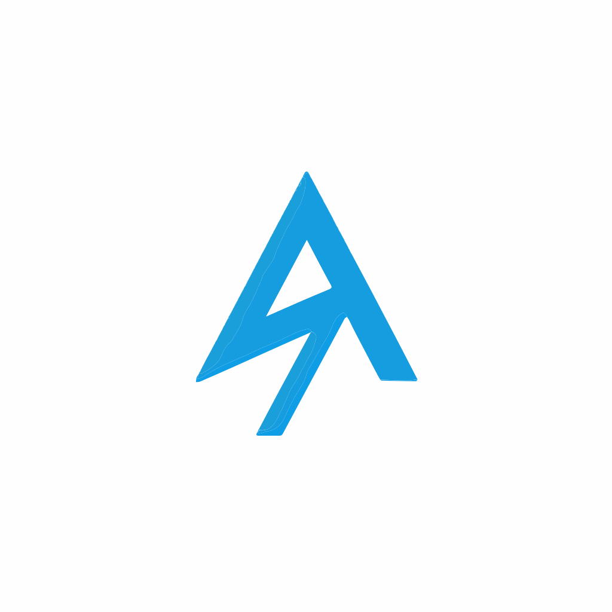

Jenish Chaplot
Actuarial Student & Developer

I'm an actuarial student balancing risk models with web development. This whole developer thing is my part-time gig—just a way to build useful stuff when I'm not studying. I plan on vibe-coding a lot more projects in the future, so expect this space to grow chaps ;)